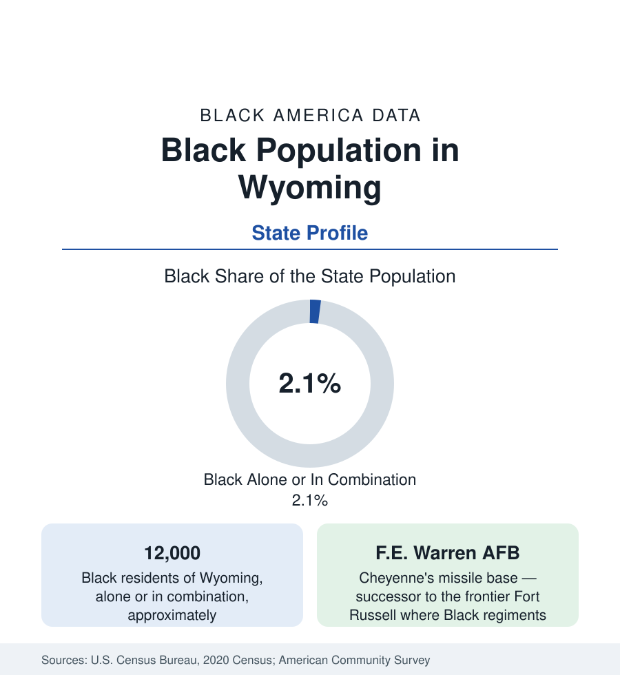

Black Census
Black Population in Wyoming: The Least Populous State's Smallest Community
About 12,000 Black Wyoming residents — one in forty-eight — in the nation's least populous state, rooted in its forts and railroads. The census profile.

Wyoming holds about 12,000 Black residents — Black alone or in combination — roughly one in forty-eight of its people, with Black alone at about 5,500, or 1 percent. Wyoming is the least populous state in the union, and its Black population is correspondingly the reference's smallest in absolute terms after Vermont's — a community of fort towns, railroad divisions, and one capital city, whose history runs through the Black regulars of the frontier Army.
The Fort and Railroad Foundation
Black Wyoming was born at the posts. Fort D. A. Russell at Cheyenne (now F.E. Warren Air Force Base) hosted Black regiments of the 9th and 10th Cavalry and the 24th and 25th Infantry across the frontier decades, and Fort McKinney (at Buffalo), Fort Washakie, and Fort Bridger rotated Black companies through the territory; their veterans and laundresses and cooks formed the nucleus of Cheyenne's and Laramie's small Black neighborhoods. The Union Pacific's Wyoming division towns — Cheyenne, Laramie, Rawlins, Green River, Evanston — added the railroad layer: porters, dining-car crews, and roundhouse workers whose families persisted in the division-point communities. The coal camp at Hanna and the trona and oil towns of the twentieth century added increments; the state's Black population peaked, in share terms, in the early territorial censuses and has run near 1 percent since.
The Modern Distribution
Cheyenne holds the largest share — the capital's Black population in the range of 3,000 to 3,500 in combination counts, a few percent of the city, centered historically on the west side near the base and now dispersed — sustained by F.E. Warren's missile-wing workforce and state government. Casper, the oil city, holds the second community, in the low thousands in combination counts, its size breathing with the energy cycle. The university at Laramie, the community colleges, and the remaining division towns hold hundreds each. The reservation counties (Fremont, around the Wind River Reservation) and the ranch counties record Black populations in the dozens — county tables in which the entire Black population fits in a school gymnasium, the extreme end of the small-population discipline this section applies to Montana and the Dakotas.
Composition and Institutions
The composition is military-weighted like the other garrison states', with the rooted railroad-descendant families of Cheyenne and Laramie as its historic core and energy-boom arrivals as its variable layer. Institutions are statewide and few by arithmetic: Cheyenne's historic Black churches (the Second Baptist tradition of the west side), the state museum's Black heritage documentation, the University of Wyoming's Black studies and student organizations, and the NAACP's Wyoming presence carried from Cheyenne. The state's Black elected representation has been episodic in the legislative record — a function of arithmetic the profile states plainly.
Indicators and Change
At 12,000 people the survey estimates are indicative only, and this reference rests the profile on the counts: the decennial series shows the population growing in combination counts at rates above the state's, with the alone count's slower growth reflecting — as in Hawaii and Alaska — the rising multiracial identification of the youngest cohorts, a pattern visible in every small western state's tables. Incomes and attainment in the aggregate survey data sit near the national Black figures, the military and government shares cushioning the energy cycle that swings the state's overall numbers.
Reading the Wyoming Numbers
The Energy Cycle in the Data
Wyoming's Black population has a barometer no other state's shares quite so directly: the energy economy. The coal, oil, and trona booms of the 1970s and the shale era drew Black workers to the Casper, Gillette, and Rock Springs fields in numbers visible in those decades' censuses, and each bust returned a fraction of them to the metros of Colorado and Utah — a boom-bust signature recorded in the county tables of the Powder River and Green River basins, where Black counts rise and fall with the rig count more faithfully than with any other variable in the state's data.
Wyoming's profile completes the mountain file: the smallest community in the reference, holding the standard western story — soldiers, railroads, one capital — at the smallest scale the census measures. Its inclusion at full length is the atlas principle again: the national Black population is the sum of Prince George's County and of Laramie County alike, and the reference counts both with the same care.
More in Black Census
The Black Population of the United States: Size, Definitions, and Distribution
The Black population of the United States totals 52.8 million — 15.4 percent of the nation. How the Census Bureau defines and counts the population, and where it lives.
Black Median Household Income in the United States
Black median household income stands at $56,490 in the Census Bureau's annual income report — how the figure is measured, how it compares, and what drives it.
The Black Poverty Rate: Levels, Children, and the Long Trend
The official Black poverty rate is 17.1 percent — against 11.1 percent nationally and 7.7 percent for non-Hispanic White Americans. How poverty is measured and what the data show.
Source: U.S. Census Bureau, 2020 Census; American Community Survey; Population Estimates Program.